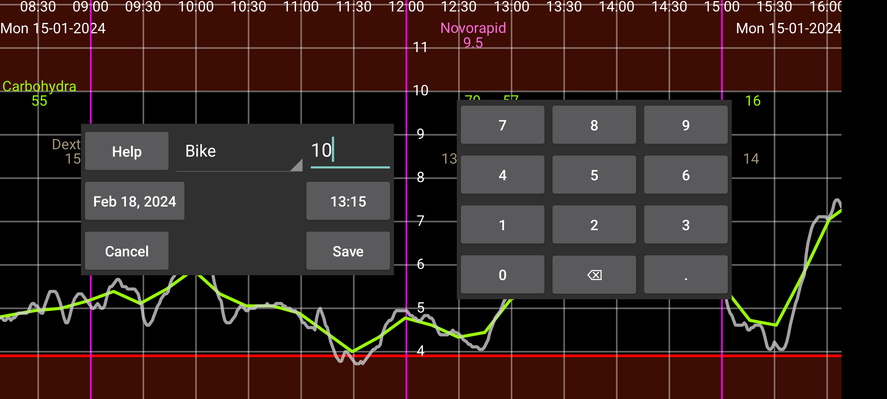

ar de es hi it ja nl pl ru tr uk uz zh en
Через Новая запись можно вводить числа, связанные с любой меткой. Метки задаются в левое меню→Настройки→Метки чисел. Записи, введенные с определенной меткой, будут показаны на графике на высоте, заданной этой меткой.
Позже запись можно изменить долгим нажатием. Ее также можно выбрать в списке введенных записей: левое среднее меню→Список.
Данные о дозах инсулина можно также получать из NovoPen® 6 или NovoPen Echo® Plus, сканируя NFC-ручку. После сканирования можно изменить, под какой меткой дозы сохраняются в Juggluco, и ограничить дозы теми, что были сделаны после определенной даты и времени. Если в памяти ручки находятся сотни доз, получение всех данных через NFC в Juggluco может занять больше 30 секунд.
Некоторые глюкометры могут отправлять измерения глюкозы крови из пальца в Juggluco по Bluetooth. См. левое меню→Настройки→Обмен данными→Глюкометры.
В левое меню→Настройки→Метки чисел также указывается, под какой меткой вводятся углеводы приема пищи. В Новая запись для этой метки показывается кнопка Еда. Нажатие этой Еда открывает экран, где прием пищи составляется из ингредиентов. Затем общее содержание углеводов рассчитывается автоматически. Также можно указать желаемое количество углеводов, и Juggluco рассчитает, сколько одного ингредиента нужно.
Исключить: исключить измерение глюкозы крови из калибровок, потому что уровень глюкозы растет или падает либо датчик еще прогревается.